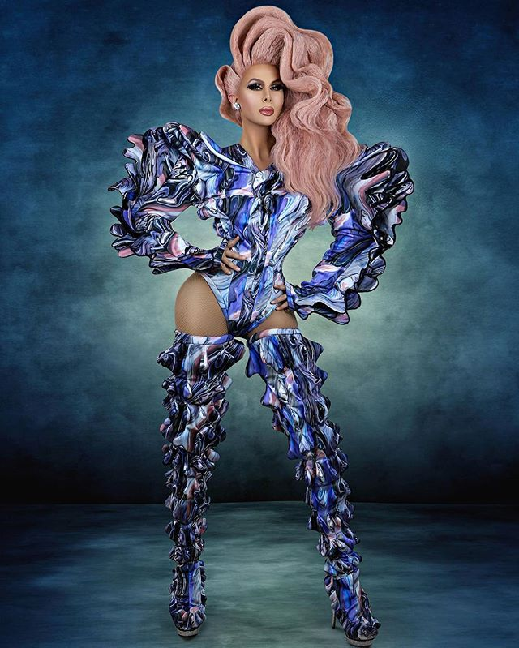

arrow_left_circle_fill
Atrás
Tucking

Es una técnica mediante la cual una Drag Queen oculta el bulto de la entrepiera para que no se destaquen a través de la ropa.
Pasos para hacer tucking

Afeita el bello púbico

Tira los genitales externos entre las piernas

Lleva los testículos hacia los canales inguinales para oscurecerlos por completo.

Cubre la punta del pene con una gasa y llévalo entre las piernas.

Con cinta médica recubre el pene escondido y pégala alrededor de las caderas o hasta el coxis.

Y listo, ya estás lsita para la escena, sólo te falta tu ropa interior y lucirte.